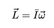

Physics is the science that studies matter, its motion and behavior through space and time, and the related entities of energy and force.
The physics of tricking comes down to the interaction between two things: "moment of inertia" and "angular velocity". Combined, these properties are called "angular momentum" and they control how high trickers go, how long they’re in the air, and how fast they spin.
“What leads up to the jump is critical...It’s just as important, or more important than the jump itself -- it’s giving them their angular momentum.”
John Di Bartolo
Applied Physicist
New York University, Tandon School of Engineering
Angular momentum is the interaction between two things: moment of inertia and angular velocity. There's a scientific equation for it that looks like this:
Moment of inertia is a measure of how difficult it is to spin an object, which is influenced by its shape.
Trickers can alter their moment of inertia by changing the shape of their bodies, throwing out legs and arms to slow down a spin at the best moment.
The angular velocity is the speed and direction of motion, which determines the actual movement of a trick.
Unlike figure skating and gymnastics, which use rotation head over foot or spin around the spine, tricking allows for rotation around any axis. In fact, the axis can change mid-trick. Shifting the axis of rotation through non-symmetric movement, like throwing up a single arm instead of both arms, gives tricking its unique style.